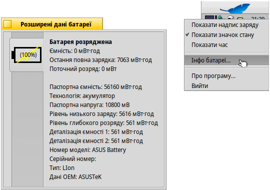

PowerStatus (Стан живлення)
PowerStatus (Стан живлення)
| Deskbar: | ||
| Розташування: | /boot/system/apps/PowerStatus | |
| Налаштування: | ~/config/settings/PowerStatus settings |
Аплет PowerStatus (Стан живлення) показує інформацію про рівень заряду (розряду) батареї і використовується тільки на мобільних комп'ютерах. Якщо аплет ще не запущено, під час запуску Ви зможете вибрати в якому режимі буде відкрита програма: у віконному режимі чи на панелі задач Deskbar. У віконному режимі можна змінити розмір піктограми, змінивши розмір вікна або використати маркер репліканта, щоб перетягнути його на робочий стіл.
Де б не було встановлено аплет, ним можна управляти за допомогою контекстного меню, яке відкривається правою кнопкою миші.
Примітка: PowerStatus вимагає підтримки ACPI програмним та апаратним забезпеченням комп'ютерної системи.
Контекстне меню складається з наступних пунктів:
| Показує рівень заряду батареї у відсотках або час, що залишився. | ||
| Показує значок заряду батареї. | ||
| Перемикання між режимами відображення рівня заряду батареї у відсотках або часу, що залишився (пункт має бути активним). | ||
| Показує вікно з розширеною інформацією про батарею. | ||
| Показує вікно з інформацією про програму (About…). | ||
| Завершує роботу аплету PowerStatus. |
Коли пункт активний, під час заряджання, в дужках відображається рівень заряду акумулятора.
Щоб попередити про низький рівень заряду батареї (<30%), значок батареї стає помаранчевим, а коли заряд стає критичним (<15%) – червоним.
Ви також отримаєте сповіщення а попереджувальний сигнал зможете настроїти на панелі налаштувань Звуки.